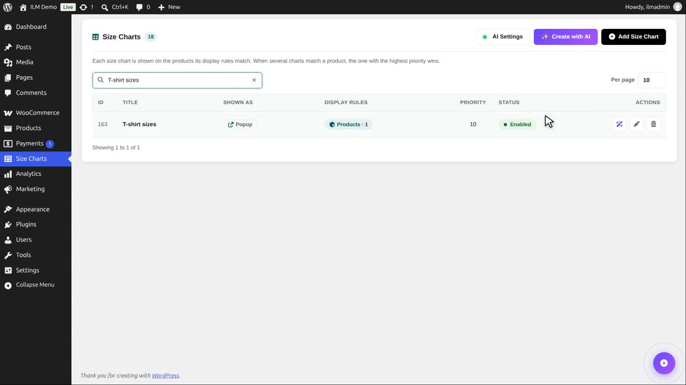
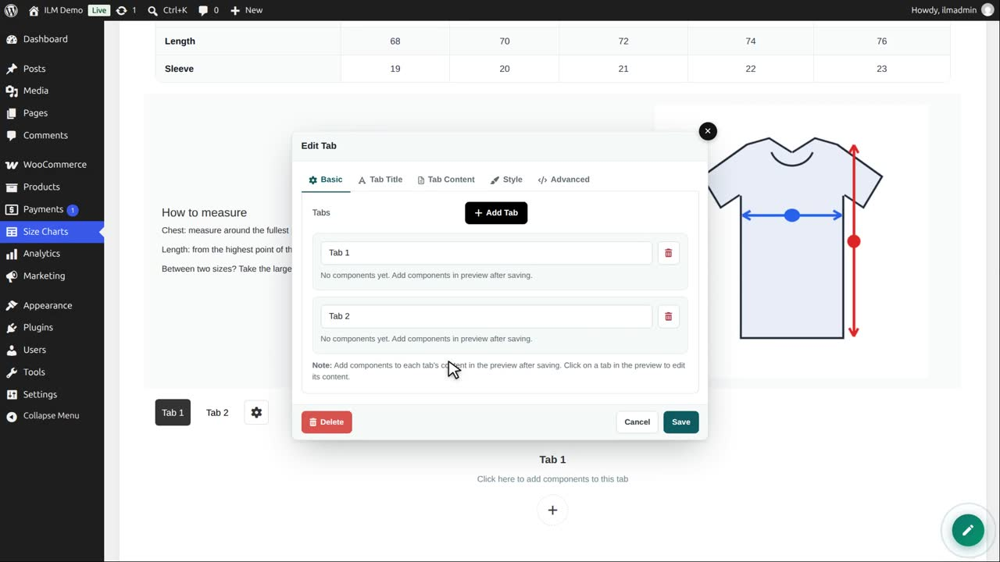
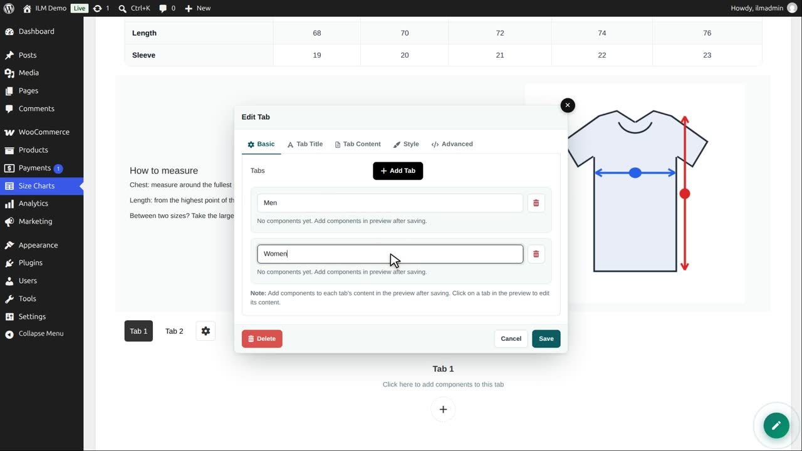
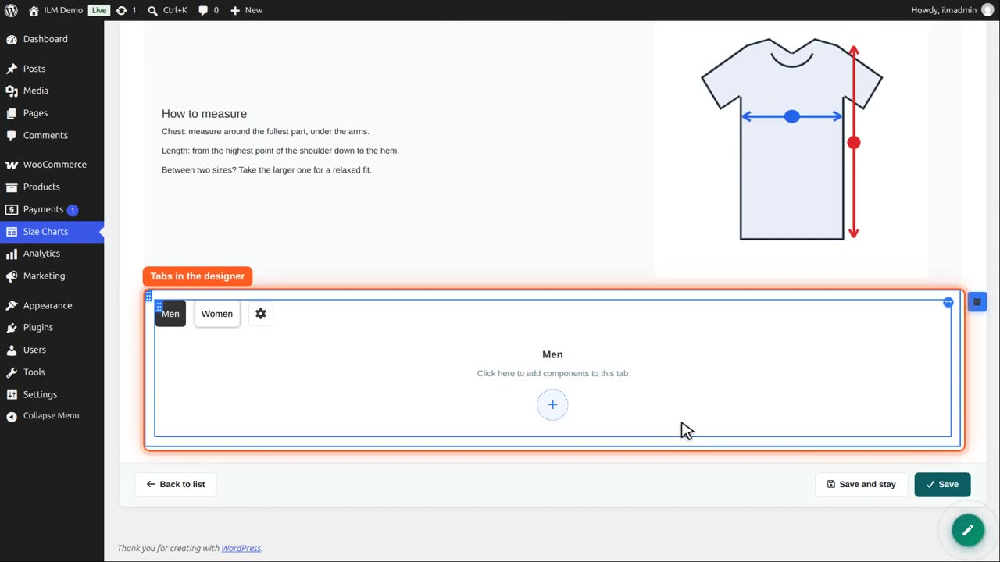

| Component | Use it for |
|---|---|
| Tab | Several panels behind tab titles, e.g. Sizes, How to measure, Fit and care. Each tab holds its own components. |
This sweater shows a chart with three tabs: tops, bottoms and size systems. The shopper clicks a title to see its content.

To make tabs, edit a chart, add a row and choose Tab.

Type the tab titles: Men and Women. Add Tab adds another, the red button removes one.

Save the editor. In the designer, click inside a tab to add its content: a table, text or a picture, like in a column.

Tab Title and Tab Content, in the editor, style the titles in normal, mouse over and selected state, and the content area.